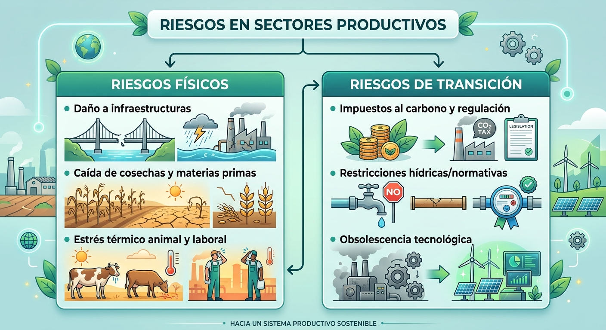
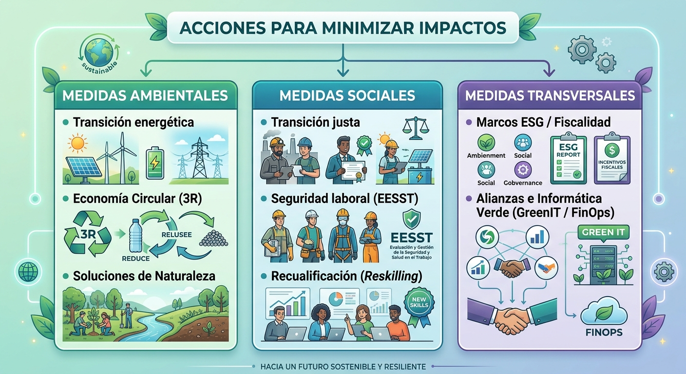

Impacto ambiental y social
Resultados de aprendizaje y criterios de evaluacion que se evaluarán en esta unidad.
| Resultados de aprendizaje de la unidad didáctica: |
|---|
| RA. 2: Caracteriza los retos ambientales y sociales a los que se enfrenta la sociedad, describiendo los impactos sobre las personas y los sectores productivos y proponiendo acciones para minimizarlos. |
| Criterios de evaluación de la unidad didáctica: |
|---|
| c) Se ha analizado el efecto de los impactos ambientales y sociales sobre las personas y los sectores productivos. |
| d) Se han identificado las medidas y acciones encaminadas a minimizar los impactos ambientales y sociales. |
1 - Impacto ambiental y social sobre las personas y los sectores productivos
Los problemas ambientales y los desafíos sociales actúan como fuerzas externas negativas que alteran la base de la actividad económica, desestabilizando el bienestar ciudadano e incrementando los costes y riesgos operacionales de las empresas.
1.1 Efectos sobre las personas
-
Salud y bienestar físico:
- La contaminación atmosférica incrementa drásticamente las enfermedades respiratorias y cardiovasculares.
- Asimismo, la degradación de las aguas dulces provoca brotes gastrointestinales y el aumento global de temperaturas extiende el rango geográfico de transmisión de vectores infecciosos como el dengue o la malaria.
-
Seguridad alimentaria y humana:
- La desertificación, la erosión del suelo y las sequías recurrentes reducen los rendimientos agrícolas, amenazando la disponibilidad de alimentos básicos.
- Ante la pérdida de sustento o la ocurrencia de eventos climáticos extremos, se generan desplazamientos forzados de población (migrantes climáticos), lo que aumenta la presión sobre los servicios urbanos y el riesgo de conflictos por recursos escasos
-
Justicia climática y economía familiar:
- Los grupos socioeconómicamente más vulnerables sufren los efectos negativos de manera desproporcionada al contar con menor capacidad financiera de adaptación o aseguramiento.
- A nivel doméstico, esto se traduce en pérdidas de ingresos por el colapso de actividades locales (agrícolas, pesqueras o turísticas) y en una mayor carga de gastos por el encarecimiento de alimentos y energía.
1.2 Efectos sobre los sectores productivos
Los sectores productivos enfrentan tres categorías principales de riesgo: riesgos físicos (daños climáticos directos), riesgos de transición (adaptación regulatoria y tecnológica) y riesgos reputacionales (pérdida de la licencia social para operar).

- Sector primario (agricultura, ganadería y pesca):
- Agricultura: Disminuye el potencial productivo del suelo por erosión y salinización de acuíferos, exigiendo inversiones elevadas en sistemas de riego eficientes y seguros agrarios910.
- Ganadería: Se registran mermas productivas por estrés térmico en los animales, mayor morbilidad y desajuste en dietas por escasez de pastos
- Pesca: Sufre el colapso de caladeros y el desplazamiento de especies a causa del aumento de temperatura marina, la acidificación oceánica y la desoxigenación
- Sector industrial y energético:
- Industria: Las industrias intensivas en consumo de agua (minería, textil, bebidas, procesamiento alimentario) enfrentan restricciones operativas y sobrecostes. Sectores clave como la industria, el transporte y la energía son responsables del 63,6% de las emisiones de GEI en España, asumiendo los mayores costes de descarbonización e impuestos al carbono
- Energía: La menor disponibilidad de agua compromete la generación hidroeléctrica, la producción de biomasa y la refrigeración de plantas no renovables, mientras las olas de calor disparan los picos de demanda eléctrica
- Sector servicios, turismo y finanzas:
- Turismo: Representa alrededor del 12% del PIB y del empleo en España, pero padece la degradación de atractivos naturales (blanqueamiento de corales, erosión costera, menor acumulación de nieve) y la pérdida de confort climático en verano.
- Finanzas y Seguros: Las entidades financieras asumen mayores riesgos de impago en sus carteras crediticias y las aseguradoras enfrentan desembolsos elevados por la alta siniestralidad de catástrofes naturales
2 - Identificación de las medidas y acciones encaminadas a minimizar los impactos ambientales y sociales
Las respuestas estratégicas para mitigar la degradación ambiental y construir resiliencia abarcan políticas públicas, transformación tecnológica y medidas laborales organizadas en torno a los Objetivos de Desarrollo Sostenible (ODS).

2.1 Medidas ambientales y tecnológicas
- Mitigación y transición energética:
- Descarbonización mediante el despliegue de energías renovables (fotovoltaica, eólica, geotérmica), electrificación de la movilidad, rehabilitación térmica de viviendas y aplicación del precio al carbono para internalizar costes ambientales.
- Gestión de recursos y economía circular: Aplicación del principio de las 3R (Reducir, Reutilizar, Reciclar), adopción de la simbiosis industrial (aprovechamiento de subproductos de una empresa como materia prima de otra) y optimización del ciclo del agua mediante riego por goteo inteligente y reutilización de aguas grises
- Restauración ecológica y agroecología: Creación de reservas naturales, reforestación con especies autóctonas y transición hacia la agricultura de conservación para retener humedad y fijar carbono en el suelo.
2.2 Medidas sociales y de transición justa
- Protección laboral y salud:
- Integración de los riesgos climáticos y del estrés térmico en la prevención de riesgos laborales (destacando el Marco de la Estrategia Española de Seguridad y Salud en el Trabajo 2023-2027).
- Políticas activas de empleo (PAE) y competencias verdes: Impulso a la recualificación (reskilling) y actualización de competencias (upskilling) para reconvertir a trabajadores de sectores "marrones" hacia "empleos verdes" (como a través del programa Empleoverde+).
- Mecanismos de equidad y transición justa: Aplicación de convenios de transición justa con bolsas de trabajo prioritarias para trabajadores afectados, prejubilaciones bonificadas y ayudas directas a familias vulnerables para combatir la pobreza energética.
2.3 Medidas Transversales
- Gobernanza y sector TIC
- Finanzas sostenibles y fiscalidad: Redirección de flujos de capital privado hacia inversiones ASG (ambientales, sociales y de gobernanza) y aplicación de reformas fiscales progresivas sobre los superricos y grandes emisores
- Debida diligencia y transparencia corporativa: Marco normativo que obliga a las empresas a auditar sus cadenas de suministro, previniendo impactos adversos en derechos humanos y medio ambiente.
- Sostenibilidad digital e informática verde (Green IT): Reducción de la huella de carbono en el sector de las TIC mediante optimización de código, minimización de datos (data minimization), gestión FinOps/GreenOps en servidores en la nube y uso de modelos de Inteligencia Artificial eficientes (cuantización e inferencia en lotes).
3 - Foro de discusión
Gestión de la Escasez Hídrica: ¿Deben aplicarse restricciones operativas a los sectores productivos o priorizar estrictamente el consumo humano y los caudales ecológicos?
- Argumentos a favor de priorizar la salud pública y el medio ambiente:
- Argumentos a favor de salvaguardar el suministro a la agricultura e industria:
¿Tienen las grandes corporaciones y rentas altas la obligación de financiar la adaptación climática de los colectivos vulnerables?
- A favor de la redistribución e impuestos al carbono:
- A favor de no sobrecargar fiscalmente al tejido empresarial:
Transición laboral exigente ¿Es justificable acelerar la eliminación de "empleos marrones" para cumplir metas ambientales, a pesar del impacto en el empleo industrial y rural?
- A favor de acelerar el cierre y la descarbonización:
- A favor de ritmos de transición graduales:
Protección y salud laboral frente al cambio climático ¿Deben imponerse limitaciones normativas a la jornada de trabajo durante episodios extremos de calor?"
- A favor de la regulación estatal estricta.
- A favor de la flexibilidad negociada por empresas y sindicatos.
Responsabilidad empresarial y sostenibilidad digital: ¿Debe obligarse a las empresas a auditar sus cadenas de valor (debida diligencia) y adoptar prácticas de informática verde (Green IT)?
- A favor de marcos regulatorios obligatorios.
- A favor de incentivos voluntarios y flexibilidad de mercado.
4 - Mapa mental de la unidad didáctica